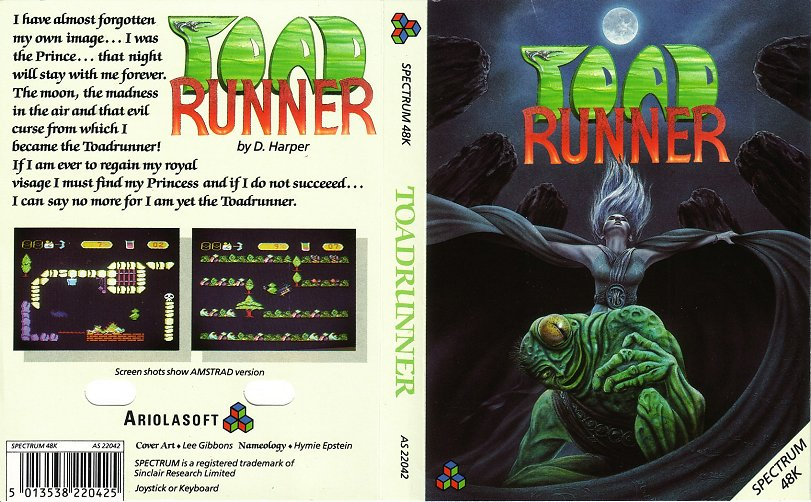
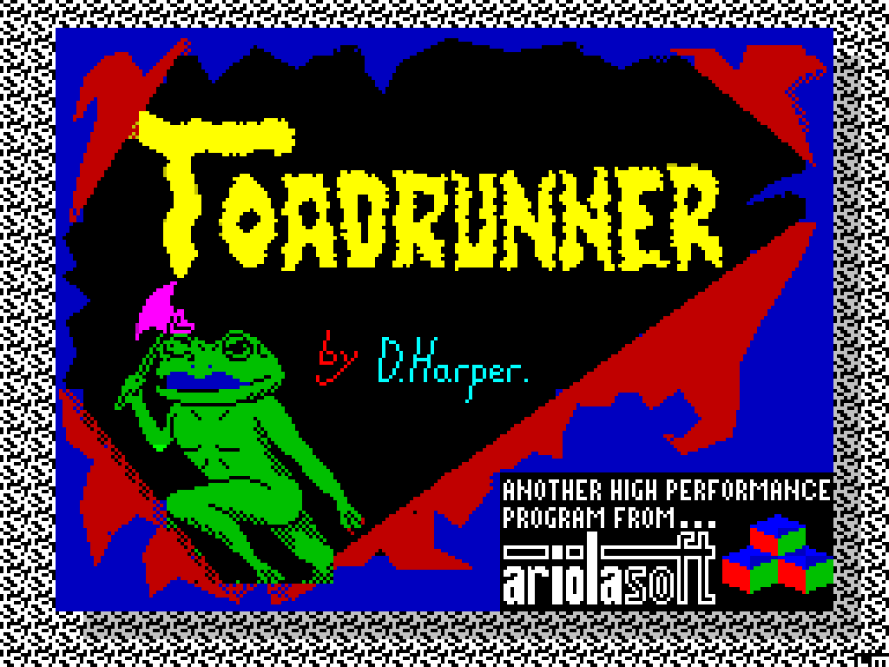

Toadrunner
Research in progress. Toadrunner appeared in 1986 under the Ariolasoft label. The catalogue credits Dave Harper. Known catalogue formats: Commodore 64, Amstrad CPC, ZX Spectrum. This holding page will be expanded as contemporary material and first-hand recollections are reviewed.